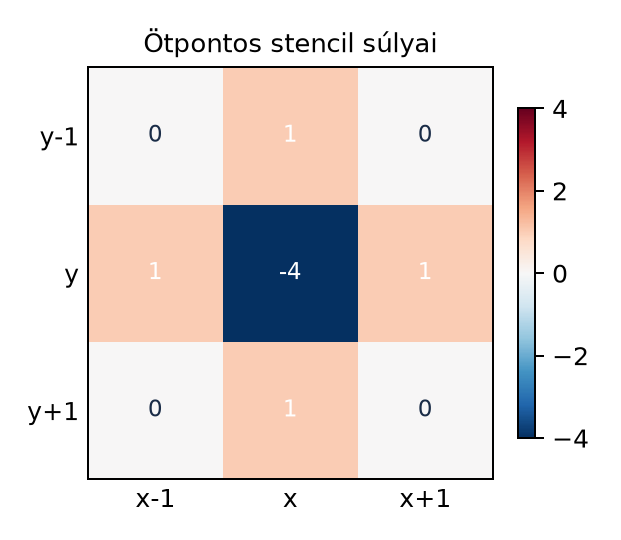

A stencil-számítás a rácsokon végzett párhuzamos adatfeldolgozás egyik legalapvetőbb mintája. A tudományos szimulációktól kezdve a képfeldolgozáson át a neurális hálózatok konvolúciós rétegeiig számos alkalmazás visszavezethető arra, hogy egy rendezett rács minden pontján a pont körüli szomszédság értékeiből számítunk új értéket. Ez a fejezet a stencil fogalmát, a szomszédsági mintát, a peremkezelést és az első hatékony GPU-megvalósítást, a shared memory tilinget vezeti be. A cél, hogy a fogalmakat és a gyakorlati mintát együtt, egy kis ellenőrizhető példán keresztül tanítsa meg.

Legyen adott egy diszkrét rács, például egy -dimenziós tömb. A stenciloperátor minden rácspontra egy rögzített, lokális szomszédság lineáris kombinációját számítja ki. Egydimenziós, sugarú stencil esetén a kimeneti elem
ahol a együtthatók a stencil súlyai. A leggyakoribb 1D-s példa a hárompontos stencil -gyel, például a második derivált közelítése:
Itt a súlyok , , . A szomszédsági minta (neighborhood pattern) azoknak az indexeltolásoknak a halmaza, amelyekre az operátor hivatkozik: . Kétdimenziós ötpontos Laplace-stencilnél a minta a középpont és a négy von Neumann-szomszéd:
A szomszédsági minta itt . A minta előre rögzített, független a rács méretétől, ezért a stencil párhuzamosításra kiválóan alkalmas: minden kimeneti elem ugyanazt a műveletsort kapja, csak a bemeneti indexek tolódnak el. Ezt nevezzük adatpárhuzamos mintának.
A stencil fogalmilag hasonlít a konvolúcióhoz, de van egy lényeges eltérés. A konvolúciónál a kernel szokásosan tükrözve kerül alkalmazásra, míg a stencilnél a súlyok a szomszédsági eltolásokhoz kötöttek. A gyakorlatban a kettőt gyakran szinonimaként használják, különösen mélytanulási környezetben. Ebben a könyvben a stencil alatt mindig a rögzített szomszédsági eltolásokkal definiált lineáris operátort értjük.
A stencil művelet jellemzői:
Amikor a stencil a rács szélén áll, a szomszédsági minta olyan indexekre hivatkozik, amelyek kívül esnek a rács érvényes tartományán. A peremfeltétel (boundary condition) határozza meg, hogyan kezeljük ezeket a hiányzó értékeket. A leggyakoribb peremfeltételek:
A halo (vagy ghost cell) a tile vagy résztartomány köré másolt extra réteg, amely a szomszédos tartományokból származó adatokat tartalmazza. Elosztott rendszerekben a halo a processzek közötti kommunikációval tölthető fel; egyetlen GPU-n belül a halo a shared memory tile kiterjesztett szegélyét jelenti. A fejezetben a halo kifejezést a shared memory tile köré másolt, a szomszédsághoz szükséges plusz elemekre használjuk.
A peremkezelés és a halo fogalma összekapcsolódik. Ha a teljes rácsot több blokkra bontjuk, minden blokk csak a saját kimeneti elemeit számítja, de a bemeneti szomszédsághoz szükség van a szomszédos blokkok határ menti elemeire is. A blokk ezért a saját tartománya köré egy szélességű halo-t másol a shared memóriába. A globális rács szélén a halo elemei a megadott peremfeltétel szerint kerülnek feltöltésre.
A legegyszerűbb CUDA-implementáció minden kimeneti rácspontra egy szálat indít, és a szomszédságot közvetlenül a global memory-ból olvassa. Ez a megoldás kódjában a következő.
// CUDA C++ (C++17), illusztráció
__global__ void stencil1d_naive(const float* __restrict__ in,
float* __restrict__ out,
int n, int radius) {
int i = blockIdx.x * blockDim.x + threadIdx.x;
if (i >= n) return;
float acc = 0.0f;
for (int k = -radius; k <= radius; ++k) {
int idx = i + k;
if (idx >= 0 && idx < n) {
acc += in[idx];
} else {
acc += 0.0f; // dirichlet perem: 0
}
}
out[i] = acc;
}A kernel launch alakja például:
stencil1d_naive<<<(n + 255) / 256, 256, 0, 0>>>(d_in, d_out, n, 1);A megoldás helyes, de teljesítménye gyenge. Minden kimeneti elemhez globális memóriaolvasás tartozik, és ugyanazokat a bemeneti elemeket a szomszédos szálak újra és újra beolvassák. Az átfedő szomszédság miatt a redundancia -szeres lehet. A global memory sávszélessége a legtöbb esetben a szűk keresztmetszet, ezért a naiv változat csak kis rácsokon vagy ritkán hívott kódokban elfogadható. Ezt a változatot használjuk baseline-ként a laborban.
A naiv megoldás további hátránya, hogy a peremfeltételek ellenőrzése minden szomszéd beolvasásánál elágazást okoz. A rács belsejében ez az elágazás mindig hamis, de a warp szintjén a szélső szálak divergenciát okozhatnak. A határkezelést ezért érdemes leválasztani.
A hatékonyabb megoldás a shared memory tiling: a blokk egyszer betölti a saját kimeneti tartományát és a hozzá tartozó halo-t a shared memóriába, majd a szálak onnan olvassák a szomszédságot. Így minden globális memóriaolvasásból származó elem csak egyszer kerül a chipre, a redundáns hozzáféréseket a gyors, on-chip shared memory szolgálja ki.
A tiling fogalma: a rácsot kimeneti tile-okra bontjuk. Egy blokk egy méretű kimeneti tartományt számít ki. A bemenethez szükséges adat a tile plusz a stencil sugara a tile minden oldalán. Ez a kiterjesztett tartomány a shared memory-ba kerül. A shared memory mérete tehát
elem, ahol és a block dimenzió. Egydimenziós esetben a méret .
A betöltés után blokk szintű szinkronizáció szükséges, mert az egyik
szál által betöltött halo-elemet egy másik szál fogja olvasni. A CUDA
__syncthreads() hívása biztosítja, hogy minden shared
memória írás láthatóvá váljon a blokk összes szála számára, mielőtt a
számítás elkezdődik.
A tiled megoldás pszeudokódja 2D-ben:
__syncthreads().Az 1D-s tiled kernel a következőképpen néz ki. A példa hárompontos stencilt használ, ahol , és a peremfeltétel Dirichlet-nulla.
// CUDA C++ (C++17), illusztráció
__global__ void stencil1d_shared(const float* __restrict__ in,
float* __restrict__ out,
int n) {
extern __shared__ float s[];
int tid = threadIdx.x;
int i = blockIdx.x * blockDim.x + tid;
int radius = 1;
int tile_size = blockDim.x;
// a kiterjesztett tartomány kezdő globális indexe
int gi = blockIdx.x * blockDim.x - radius + tid;
// betöltés a global memory-ból, peremkezeléssel
if (gi >= 0 && gi < n) {
s[tid] = in[gi];
} else {
s[tid] = 0.0f; // dirichlet perem
}
__syncthreads();
if (i < n) {
float acc = s[tid] * (-2.0f)
+ s[tid + 1] * 1.0f
+ s[tid + 2] * 1.0f; // 3-pontos stencil, r=1
out[i] = acc;
}
}A launch:
int threads = 256;
int shared_bytes = (threads + 2) * sizeof(float);
stencil1d_shared<<<(n + threads - 1) / threads, threads, shared_bytes, 0>>>(d_in, d_out, n);Itt a shared memória hossza threads + 2 * radius, tehát
threads + 2. A szálak a s[tid],
s[tid+1], s[tid+2] elemeket olvassák. A
betöltésnél minden szál egy elemet tölt be, de a kiterjesztett tartomány
hossza nagyobb, mint a szálak száma. A fenti kód ezért nem tölti be a
kiterjesztett tartomány minden elemét; hiányoznak a jobb oldali halo
elemei. A példa egyszerűsített, és a helyes megvalósításhoz a szálaknak
ciklikusan be kell tölteniük a kiterjesztett tartományt, vagy a blokk
méretét úgy kell megválasztani, hogy a szálak száma megegyezzen a
kiterjesztett tartomány hosszával. A laborban ezt a hibát kijavítjuk: a
betöltési szakaszban a szálak egy for ciklussal,
stride-dal töltik be a teljes kiterjesztett tartományt.
A helyes betöltési minta 1D-ben:
// CUDA C++ (C++17), illusztráció
__global__ void stencil1d_shared_v2(const float* __restrict__ in,
float* __restrict__ out,
int n) {
extern __shared__ float s[];
int tid = threadIdx.x;
int i = blockIdx.x * blockDim.x + tid;
int radius = 1;
int tile_size = blockDim.x;
int s_size = tile_size + 2 * radius;
// ciklikus betöltés: minden szál több elemet is betölthet
for (int j = tid; j < s_size; j += blockDim.x) {
int gi = blockIdx.x * blockDim.x - radius + j;
s[j] = (gi >= 0 && gi < n) ? in[gi] : 0.0f;
}
__syncthreads();
if (i < n) {
float acc = s[tid] * (-2.0f)
+ s[tid + 1] * 1.0f
+ s[tid + 2] * 1.0f;
out[i] = acc;
}
}Itt a for ciklus biztosítja, hogy a teljes
s_size elemet feltöltsük, függetlenül attól, hogy
blockDim.x kisebb, mint a kiterjesztett méret. Ez a minta
általánosan használható 1D és 2D esetben is.
A 2D-s tiled kernel sematikusan a következő. A példa 5-pontos Laplace-stencil, , Dirichlet-nulla peremmel.
// CUDA C++ (C++17), illusztráció
#define TILE_X 32
#define TILE_Y 32
#define RADIUS 1
__global__ void stencil2d_5point_shared(const float* __restrict__ in,
float* __restrict__ out,
int width, int height) {
extern __shared__ float s[];
int tx = threadIdx.x;
int ty = threadIdx.y;
int x = blockIdx.x * TILE_X + tx;
int y = blockIdx.y * TILE_Y + ty;
int s_pitch = TILE_X + 2 * RADIUS;
int sx = tx + RADIUS;
int sy = ty + RADIUS;
// a kiterjesztett tartomány globális mérete
int s_w = TILE_X + 2 * RADIUS;
int s_h = TILE_Y + 2 * RADIUS;
// ciklikus betöltés a blokk minden szálával
for (int j = ty * blockDim.x + tx; j < s_w * s_h; j += blockDim.x * blockDim.y) {
int local_x = j % s_w;
int local_y = j / s_w;
int gx = blockIdx.x * TILE_X - RADIUS + local_x;
int gy = blockIdx.y * TILE_Y - RADIUS + local_y;
if (gx >= 0 && gx < width && gy >= 0 && gy < height) {
s[local_y * s_pitch + local_x] = in[gy * width + gx];
} else {
s[local_y * s_pitch + local_x] = 0.0f; // dirichlet perem
}
}
__syncthreads();
if (x < width && y < height) {
float center = s[sy * s_pitch + sx];
float left = s[sy * s_pitch + (sx - 1)];
float right = s[sy * s_pitch + (sx + 1)];
float up = s[(sy - 1) * s_pitch + sx];
float down = s[(sy + 1) * s_pitch + sx];
out[y * width + x] = -4.0f * center + left + right + up + down;
}
}A kernel launch alakja:
dim3 block(TILE_X, TILE_Y);
dim3 grid((width + TILE_X - 1) / TILE_X, (height + TILE_Y - 1) / TILE_Y);
int shared_bytes = (TILE_X + 2) * (TILE_Y + 2) * sizeof(float);
stencil2d_5point_shared<<<grid, block, shared_bytes, 0>>>(d_in, d_out, width, height);A kódban a shared memória elrendezése a s_pitch
használatával történik, ami
.
Ez a padding elkerüli a shared memory bank ütközéseket, amelyek akkor
lépnek fel, ha a hozzáférések egyszerre ugyanazt a bankot címzik. A
padding bevezetése gyakran javítja a teljesítményt, de a laborban
méréssel kell igazolni.
Az OpenCL programozási modellje hasonló: a work-group felel meg a CUDA blokknak, a local memory a shared memóriának. Az 1D-s stencil naiv változata OpenCL C-ben:
// OpenCL C, illusztráció
__kernel void stencil1d_naive(__global const float* in,
__global float* out,
const int n) {
int i = get_global_id(0);
if (i >= n) return;
float acc = 0.0f;
for (int k = -1; k <= 1; ++k) {
int idx = i + k;
if (idx >= 0 && idx < n) {
acc += in[idx];
}
}
out[i] = acc;
}A tiled változat local memóriát használna, a szinkronizációhoz
barrier(CLK_LOCAL_MEM_FENCE) szükséges. A fejezet témája
miatt a CUDA-t részletezzük, de az OpenCL-logika ugyanaz.
JAX-ban a stencil gyakran
jax.lax.conv_general_dilated-dal vagy
jax.scipy.signal-al fejezhető ki. Egy 2D
Laplace-stencil:
# Python / JAX, illusztráció
import jax
import jax.numpy as jnp
def laplace_2d(u):
kernel = jnp.array([[0.0, 1.0, 0.0],
[1.0, -4.0, 1.0],
[0.0, 1.0, 0.0]], dtype=jnp.float32)
return jax.lax.conv_general_dilated(
u[None, None, :, :],
kernel[None, None, :, :],
(1, 1),
'SAME'
)[0, 0]Itt a JAX a konvolúció primitívet használja, amely a TPU/GPU háttéren a tiled implementációt automatikusan előállítja. A fejezetben ez a kód a modell illusztrációja; a tényleges futtatásnál a JAX verzióját és a háttér eszközt rögzíteni kell.
A labor célja, hogy a naiv és a shared memory tiled implementációt összehasonlítsd. Az alábbi környezeti adatokat a labor előtt rögzíteni kell, és ha nem áll rendelkezésre valós eszköz, helyőrzőt kell használni:
--gpus all,
timeout 60 s, nvidia-smi ellenőrzésA mérési folyamat:
A mérési napló táblázata:
| implementáció | futásidő (ms) | szórás (ms) | effektív sávszélesség (GB/s) | occupancy (%) | regiszter/szál | shared memória (B/blokk) |
|---|---|---|---|---|---|---|
| 1D naiv | MÉRT | MÉRT | MÉRT | MÉRT | MÉRT | 0 |
| 1D tiled | MÉRT | MÉRT | MÉRT | MÉRT | MÉRT | (block+2)*4 |
| 2D naiv | MÉRT | MÉRT | MÉRT | MÉRT | MÉRT | 0 |
| 2D tiled | MÉRT | MÉRT | MÉRT | MÉRT | MÉRT | (32+2)*(32+2)*4 |
A mért és a várt eredményt el kell különíteni. A várt eredmény a modellből:
A laborban a hibakezelés kötelező. Minden CUDA API hívás után
checkCuda makró, a kernel után
cudaDeviceSynchronize és cudaGetLastError. A
hibás kernel izolált környezetben fut, timeouttal.
A stencil implementálásakor a leggyakoribb hibák a következők.
1. Hiányzó __syncthreads() a betöltés és a
számítás között. A shared memóriába írás és az olvasás közötti
sorrend nincs garantálva szinkronizáció nélkül. A helyes megoldás:
__syncthreads() a betöltési szakasz végén, majd a számítási
szakasz végén újabb szinkronizáció, ha a shared memóriát a következő
iterációban újra felülírjuk.
2. Hiányzó vagy hibás peremkezelés. Ha a globális index a rácson kívülre mutat, a memória-hozzáférés nem definiált. A helyes megoldás: a betöltési fázisban a globális index határellenőrzése, és a peremfeltételnek megfelelő érték írása a shared cellába.
3. Nem teljes halo betöltés. Ha a blokk szálainak száma kisebb, mint a kiterjesztett tile mérete, a halo egyes elemei betöltetlenek maradnak. A helyes megoldás: ciklikus betöltési hurok, vagy a blokk méretének a kiterjesztett tile méretéhez igazítása.
4. Bank conflict a shared memóriában. Ha a szomszédsági hozzáférések ugyanabba a bankba mutatnak, a hozzáférés sorosításra kerül. A helyes megoldás: a shared memória sorméretét paddinggel úgy megválasztani, hogy a szomszédos szálakhoz tartozó címek eltérő bankba essenek.
5. Divergencia a peremfeldolgozásnál. Ha a peremkezelés a számítási fázisban marad elágazásként, a warp szintjén a szélső szálak eltérő útvonalat járnak be. A helyes megoldás: a peremkezelést a betöltési fázisba helyezni, ahol a feltétel csak a globális indexre vonatkozik, és a számítási fázisban már nincs elágazás.
6. Helytelen shared memória méret a launch-nál. Ha a
launch harmadik paramétere kisebb, mint a kernel által használt
extern __shared__ tömb mérete, a futás hibát okoz vagy
csendesen hibás eredményt ad. A helyes megoldás: a méretet egyértelműen
kiszámítani, és a launch-nál átadni.
A stencil-számítás a rácsos adatfeldolgozás alapmintája, amelyben minden kimeneti pont egy rögzített szomszédsági mintából számolódik. A naiv globális memóriás implementáció helyes, de a redundáns beolvasások miatt sávszélesség-korlátos. A shared memory tiling a tile-t és a halo-t egyszer tölti be a shared memóriába, majd onnan szolgálja ki a szomszédsági hozzáféréseket. A peremkezelést a betöltési fázisban kell elvégezni, a számítási fázisban pedig a blokk szintű szinkronizáció után a szálak a shared memóriából dolgoznak. A labor 1D és 2D stencil összehasonlítását írja elő, ahol a baseline a naiv kernel, az optimalizált változat a tiled kernel. A mérést a könyv konvenciói szerint warm-up-pal, ismétlésekkel, szórással és a valós hardverkörnyezet rögzítésével kell elvégezni.
A következő alfejezet (Halo-csere és többblokkos stencil) erre az alapra épít, és a halo-cserét, valamint a többblokkos stencil végrehajtást tárgyalja, ahol a globális rács mérete nagyobb, mint egyetlen shared memory tile.
Miért van szükség legalább két __syncthreads() hívásra
egy olyan tiled stencil kernelben, amelyben ugyanazt a shared memóriát
többször is felülírják? Gondold végig, mi történne, ha a második
szinkronizáció elmaradna.